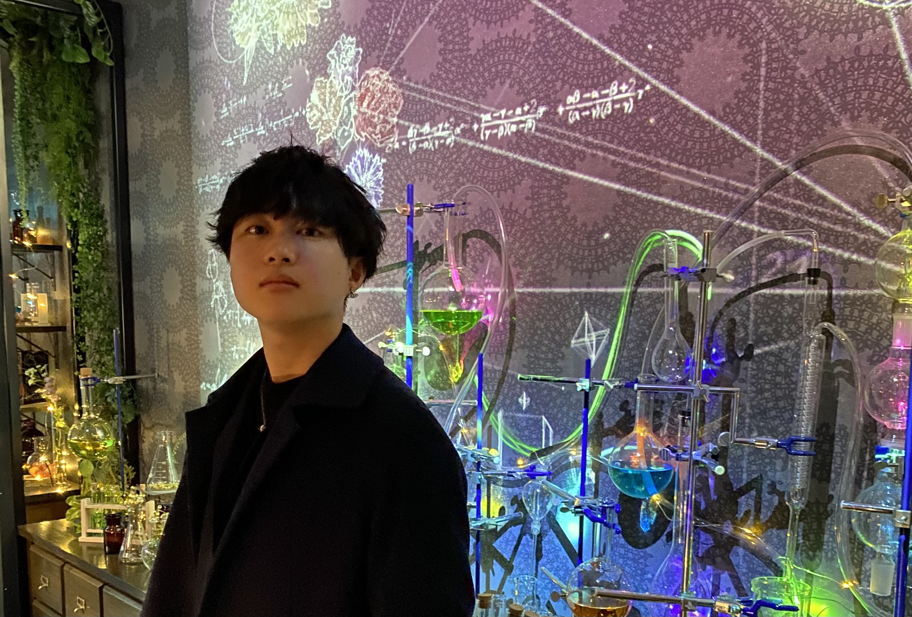

April 2024 - May 2026
Master's degree, Department of Intelligent Systems, Graduate School of Informatics, Nagoya University, Japan
April 2020 - March 2024
Bachelor's degree, Department of Computer Science, School of Informatics, Nagoya University, Japan
EACL 2026
How Do Language Models Acquire Character-Level Information?
Soma Sato, Ryohei Sasano
第265回NL研究発表会
Soma Sato, Ryohei Sasano
ACL 2024 SRW
Improving Sentence Embeddings with Automatic Generation of Training Data Using Few-shot Examples
Soma Sato, Hayato Tsukagoshi, Ryohei Sasano, Koichi Takeda
NLP 2024
自動生成した NLI データを用いた教師なし文埋め込みの改良
Soma Sato, Hayato Tsukagoshi, Ryohei Sasano, Koichi Takeda
October 2024 - December 2024
Data Scientist Internship Employee at Recruit Co., Ltd.
August 2024 - September 2024
Internship Employee at Preferred Networks, Inc.
January 2024 - Present
Software Engineering Internship at Feynma Technology
1-token predictionを用いたFinewebのアノテーション
August 2024
生成AIで受注業務自働化アシスタント 〜実装編 FunctionCallingの場合〜
Soma Sato, Ryohei Sasano
July 2024
May 2023
Basic Information Engineer
February 2023
TOEIC: 795
sato.soma.y7@s.mail.nagoya-u.ac.jp